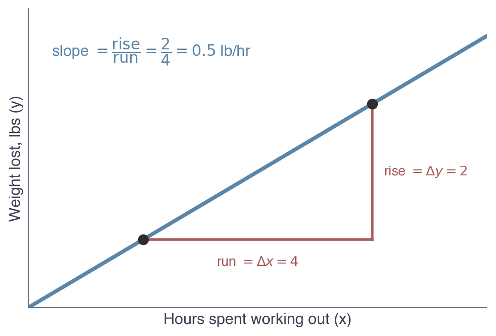
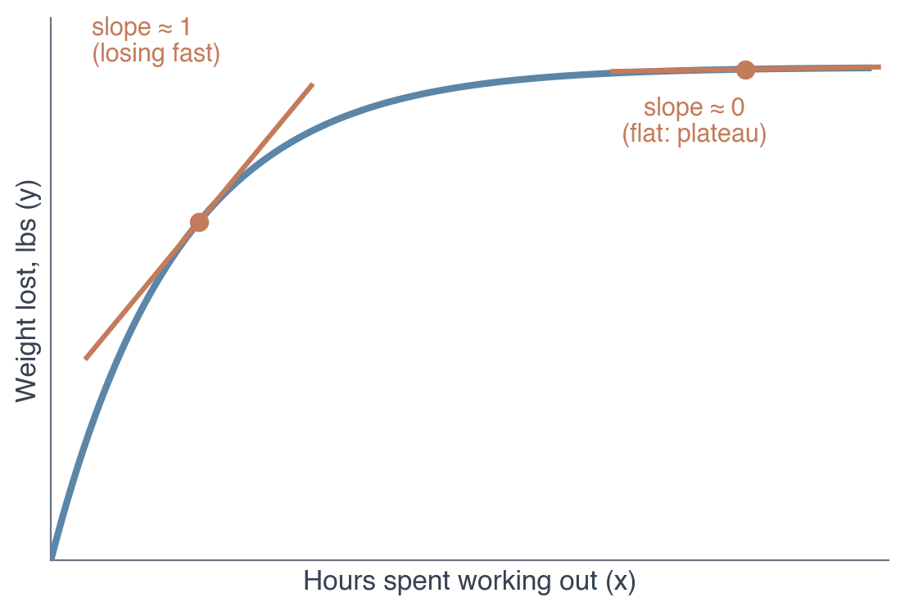
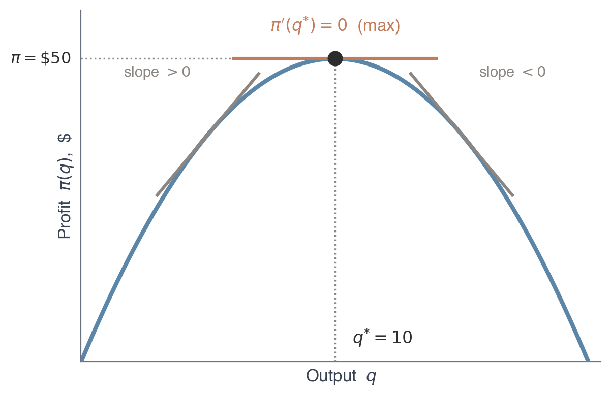

ECON 2316 • Microeconomic Theory
Read the short section for a chapter before that lecture. Nothing here is new economics — it is the notation the lecture will assume you can read.
Dr. Richeng Piao
Department of Economics • Northeastern University
\(\dfrac{dy}{dx}\)
\(\dfrac{\partial Q}{\partial p}\)
\(\varepsilon\)
Two short sections. Each covers only the notation its chapter actually asks you to use — click a card to jump.
Before Chapter 2
Derivatives, Partials & Solving for \(p^*\)
Slope of a line, then of a curve — the four differentiation rules, the curly \(\partial\), and setting two curves equal.
Before Chapter 3
Ratios, % Change & Elasticity
What a ratio means, percentage change done right, and how a slope becomes an elasticity.
Chapter 1 needs nothing from here. It uses the idea of a derivative and of setting a slope to zero, but never asks you to compute one — Walkthrough 1.5 is shown, not solved.
Before Ch 2
Suppose weight loss were linear — the same pounds lost every hour. The slope is constant: rise / run \(= 2/4 = 0.5\) lb per hour.
Why it's tempting
One number describes the whole relationship — no calculus needed.
Why it's not realistic
It never slows down: 100 hrs → 50 lbs, 1,000 hrs → 500 lbs. Real bodies hit diminishing returns and plateau — so the line bends into a curve.

Before Ch 2
A real curve bends, so its slope differs at every point. A derivative is that slope at a single point — the rate of change right there.
Diminishing returns: steep early (slope ≈ 1), nearly flat later (slope ≈ 0) — no single number works.
Notation
Weight lost \(= f(\text{hours})\), i.e. \(y = f(x)\). Its derivative — how a change in \(x\) affects \(y\) — is written \(\dfrac{df(x)}{dx}\) or \(f'(x)\).

Before Ch 2
At any interior optimum of a smooth \(f\): \[ f'(x^{*}) = 0 \]
At the top of a smooth hill the tangent is flat. If \(f'(x^{*})>0\), move right and \(f\) rises; if \(f'(x^{*})<0\), move left — so the slope must be zero. The SOC sorts max from min: \(f''(x^{*})\le 0\) for a maximum.

Worked example — maximize \(\pi(q)=10q-0.5q^{2}\)
FOC \(\pi'(q)=10-q=0 \Rightarrow q^{*}=10\)
SOC \(\pi''(q)=-1<0\) ✓ (max)
Profit \(\pi(10)=\$50\)
Forgot how to take a derivative? Press ↓ for the toolkit — constant, power rule, and sums cover nearly everything we use.
Before Ch 2
In general, if we have
\(f(x)=c \quad\Rightarrow\quad \dfrac{df(x)}{dx}=f'(x)=0\)
Example
\(f(x)=1000\;\) so \(\;c=1000\), and \(\;f'(x)=0\)
next rule
Before Ch 2
In general, if we have
\(f(x)=c\,x^{\alpha} \quad\Rightarrow\quad f'(x)=c\,\alpha\,x^{\alpha-1}\)
Example
\(f(x)=20x^{3}\;\) so \(\;c=20,\ \alpha=3\), and \(\;f'(x)=20(3)x^{2}=60x^{2}\)
next rule
Before Ch 2
In general, if we have
\(f(x)=g(x)\pm h(x) \quad\Rightarrow\quad f'(x)=g'(x)\pm h'(x)\)
Example
\(f(x)=30x+5x^{2}\;\Rightarrow\; f'(x)=30+10x\)
one more rule
Before Ch 2
\(f(x)=g\big(h(x)\big) \;\Rightarrow\; f'(x)=g'\big(h(x)\big)\cdot h'(x)\)
Leibniz: \(y=g(u),\ u=h(x)\;\Rightarrow\;\dfrac{dy}{dx}=\dfrac{dy}{du}\cdot\dfrac{du}{dx}\) — outside derivative × inside derivative.
Plain example
\(f(x)=(2x+5)^{3}\)
\(u=2x+5,\;\;y=u^{3}\)
\(f'(x)=3(2x+5)^{2}\cdot 2 = 6(2x+5)^{2}\)
In economics — the egg shock, numerically
\(Q^{d}=200-5p,\quad Q^{s}=50+10p-\alpha\) (\(\alpha=\) supply lost to flu)
Clearing: \(200-5\,p^{*}(\alpha)=50+10\,p^{*}(\alpha)-\alpha\)
Differentiate in \(\alpha\) (chain rule on \(p^{*}(\alpha)\)):
\(-5\,\dfrac{dp^{*}}{d\alpha}=10\,\dfrac{dp^{*}}{d\alpha}-1\;\Rightarrow\;\dfrac{dp^{*}}{d\alpha}=\dfrac{1}{15}\)
Flu hits \(\alpha=30\Rightarrow\Delta p^{*}=\tfrac{30}{15}=+\$2\): price \(10\to 12\). ✓
Same trick gives any \(p^{*}(\alpha)\) in Ch 2. That's the toolkit — press → to continue.
Before Ch 2
Quantity demanded depends on the price and on income, tastes, the price of substitutes… A partial derivative asks: what if only the price moves?
\[\frac{\partial Q^{d}}{\partial p}\ =\ \text{slide along the curve}\]
The curly \(\partial\) is the only difference from \(d\). It signals “other things held still.”
This is exactly the movement along vs. shift distinction, written as maths: \(\partial Q^{d}/\partial p\) moves you along; a change in anything else shifts the curve.
Before Ch 2
Equilibrium is one equation: the quantity people want equals the quantity firms bring.
\(Q^{d}(p) = Q^{s}(p)\) → solve for \(p^{*}\), then put \(p^{*}\) back into either curve to get \(Q^{*}\).
Substituting back into the other curve is a free error-check: both must give the same \(Q^{*}\).
Worked once, slowly
\(200-5p = 50+10p\)
\(150 = 15p\)
\(p^{*} = 10\)
\(Q^{*} = 200-5(10) = 150\) and \(50+10(10)=150\) ✓
Before Ch 3
A ratio is just a comparison of two numbers: how big is \(A\) relative to \(B\)? Write it \(A/B\) (read “\(A\) to \(B\)” or “\(A\) per \(B\)”).
The idea
\(\dfrac{A}{B} = 2\)
“\(A\) is twice \(B\).”
\(\dfrac{A}{B} = 0.5\)
“\(A\) is half of \(B\).”
\(\dfrac{A}{B} = 1\)
“\(A\) and \(B\) are equal.”
Apple \$1, water bottle \$2: ratio \(= 2/1 = 2\) — water is 2× the apple.
MBTA fare hike (July 2025)
New subway fare \(p_{\text{new}} = \$2.90\)
Old subway fare \(p_{\text{old}} = \$2.40\)
Ratio \(\dfrac{p_{\text{new}}}{p_{\text{old}}} = \dfrac{2.90}{2.40} \approx \mathbf{1.208}\)
“The new fare is 120.8% of the old fare” — or equivalently, “\$1.21 of new per \$1.00 of old.”
Order matters. \(2.90/2.40 = 1.208\) is “new per old.” Flipping it — \(2.40/2.90 \approx 0.828\) — says the old fare was 82.8% of the new. Same data, different ratio, different statement.
Before Ch 3
\(\displaystyle \%\Delta = \frac{\text{new} - \text{old}}{\text{old}} \times 100\%\)
MBTA — continued
Numerator: \(p_{\text{new}} - p_{\text{old}} = 2.90 - 2.40 = \mathbf{\$0.50}\)
Denominator: \(p_{\text{old}} = \mathbf{\$2.40}\)
\(\%\Delta p = \dfrac{0.50}{2.40} \approx 0.2083 = \mathbf{+20.83\%}\)
(a price increase)
Why “old” in the denominator?
We want the change relative to the starting point — \$0.50 from \$2.40 is meaningfully different from \$0.50 from \$50.
Sign convention
\(\%\Delta > 0\) rise · \(\%\Delta < 0\) fall · \(\%\Delta = 0\) no change
Building block of elasticity: \(\;\varepsilon_D = \dfrac{\%\Delta Q}{\%\Delta p}\) — two percentage changes divided by each other.
Before Ch 3
Each percentage change is \(\dfrac{\text{new} - \text{old}}{\text{old}}\). Same law of demand — watch the magnitudes.
Eggs — a necessity
| Price | \(\$2.50 \to \$4.90\) |
| Quantity | \(100 \to 98\) M dozen/wk |
\(\%\Delta p = \dfrac{4.90-2.50}{2.50} = \mathbf{+96\%}\)
\(\%\Delta Q = \dfrac{98-100}{100} = \mathbf{-2\%}\)
Dining out — a luxury
| Price | \(\$40 \to \$50\) |
| Quantity | \(200 \to 140\) meals/wk |
\(\%\Delta p = \dfrac{50-40}{40} = \mathbf{+25\%}\)
\(\%\Delta Q = \dfrac{140-200}{200} = \mathbf{-30\%}\)
Both obey the law of demand (\(p\uparrow \Rightarrow Q\downarrow\)). What differs is the magnitude of the quantity reaction — eggs barely budge (\(-2\%\)), dinners drop hard (\(-30\%\)).
Before Ch 3
A slope answers “how many units?” An elasticity answers “what percent?” — the same information, made unit-free.
\[\varepsilon \;=\; \underbrace{\frac{dQ}{dp}}_{\text{the slope}}\times\underbrace{\frac{p}{Q}}_{\text{the rescaling}}\]
So elasticity is not the slope. It is the slope multiplied by where you are sitting on the curve — which is why it changes as you move along a straight line.
\(|\varepsilon|>1\) elastic — quantity reacts more than price
\(|\varepsilon|<1\) inelastic — quantity barely budges
Demand elasticity comes out negative — price up, quantity down. Ch 3 keeps the sign and takes the absolute value only when comparing sizes.
Before Ch 3
A tax moves the buyer’s price and the seller’s price at the same time. To track a total change built from several partial ones, you add the pieces up:
\[dQ = \frac{\partial Q}{\partial p}\,dp \;+\; \frac{\partial Q}{\partial \alpha}\,d\alpha\]
“The total change equals each partial effect times how much that thing moved.”
Why Ch 3 needs it
It is what produces the tax-incidence formula — the split of a tax between buyer and seller, decided entirely by the two elasticities.
Before Chapter 2
Slope of a line → slope of a curve
Constant, power, sum, chain
\(\dfrac{\partial Q}{\partial p}\) — hold the rest still
\(Q^{d}=Q^{s}\) — solve for \(p^{*}\)
Before Chapter 3
What a ratio is measuring
\(\%\Delta X\) — always over the starting value
\(\varepsilon = \dfrac{dQ}{dp}\cdot\dfrac{p}{Q}\)
\(dQ = \tfrac{\partial Q}{\partial p}dp + \tfrac{\partial Q}{\partial\alpha}d\alpha\)
If one of these stops making sense mid-lecture, come back here rather than pushing on.